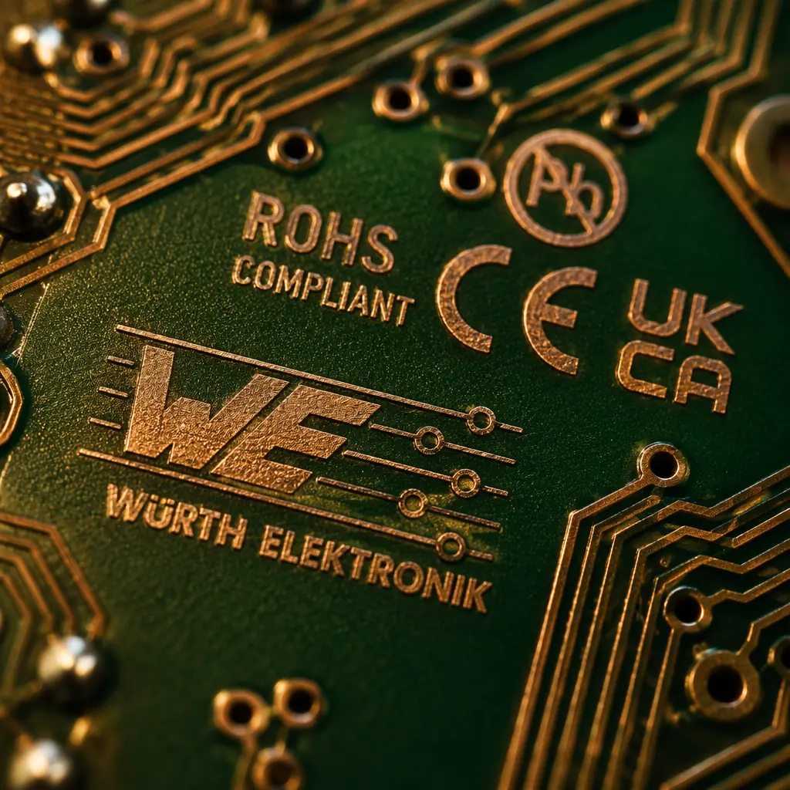
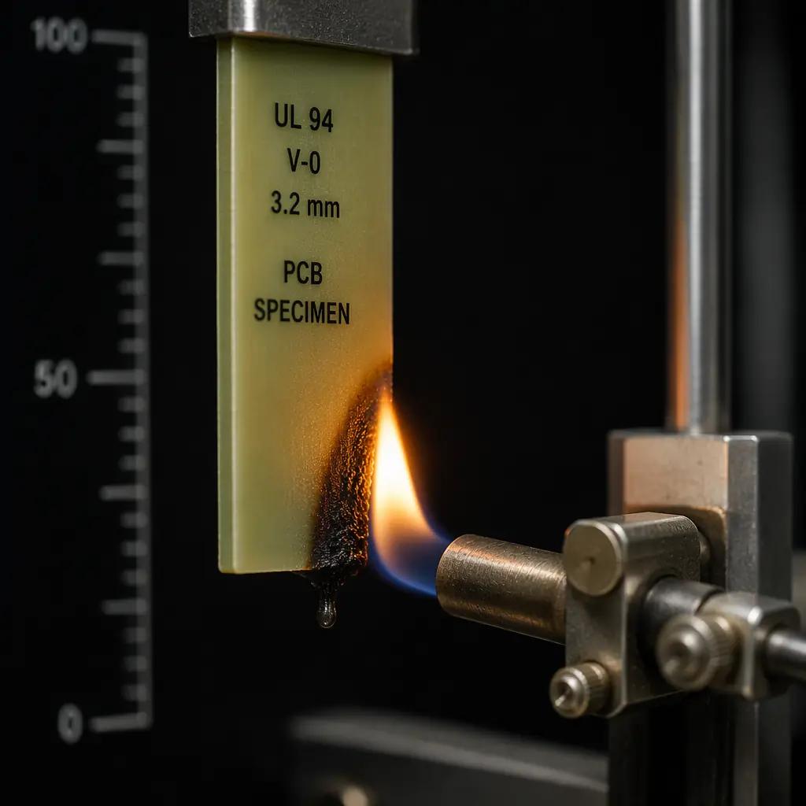
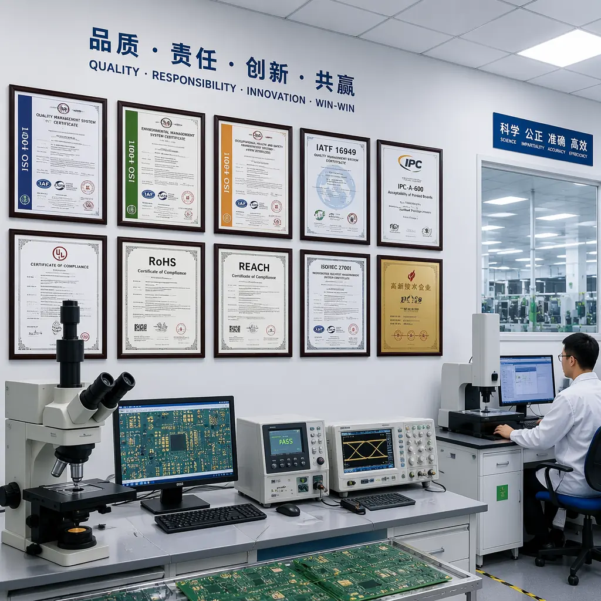

Pick up any PCB destined for a North American end product — a medical device, an industrial control panel, an EV charging station — and look closely at the board. Somewhere in the copper layer, etched alongside the manufacturer's logo and date code, you will find a small rectangular mark with the letters "UL" inside a circle. That mark is not decorative. It is the visible signature of a UL Recognized Component certification, and without it, your product cannot pass a North American electrical inspection. Every year, shipments worth an estimated $200 million are held at U.S. and Canadian ports because the PCBs inside finished products lack valid UL recognition — a completely avoidable problem if procurement teams know what to verify before placing an order.
Huaxing PCBA holds UL file number E501459, which covers a complete range of UL-recognized laminates — including high-Tg FR-4, halogen-free materials, and polyimide for high-temperature applications — manufactured under annual factory surveillance by UL auditors. Our UL recognition spans standard and advanced PCB constructions up to 32 layers, with all material combinations pre-approved under the ZPMV2 category. For North American buyers, this means your PCB order ships with a valid UL mark that your compliance officer and end customer's electrical inspector will accept without question. See our full certifications guide for how UL fits into the broader compliance picture.

What UL Certification Actually Means for PCBs
UL (Underwriters Laboratories) is a Nationally Recognized Testing Laboratory (NRTL) operating under OSHA in the United States. For PCBs, UL certification is not a single standard — it is a layered system of three interconnected standards that together verify the safety of the bare printed circuit board as a component inside a larger electrical product. Understanding the distinction between these three layers is critical for procurement managers, because a supplier who claims "we are UL certified" without specifying which standard they are certified to may only hold the weakest link in the chain.
UL 796 — Standard for Printed Wiring Boards
This is the foundational standard for PCB manufacturing. UL 796 covers the PCB itself as a finished component: conductor spacing, minimum creepage distances, solder mask adhesion, delamination resistance, and the bond strength between copper foil and laminate. A PCB carrying a UL Recognized Component Mark under UL 796 has passed tests including thermal stress at 288°C for 10 seconds without delamination, peel strength testing on all copper layers, and flammability classification per UL 94. When a North American electrical inspector opens a panel and sees a UL mark on the PCB, UL 796 is what they are verifying. For a deeper understanding of how PCB quality is verified at the material level, see our laminate selection guide.
UL 94 — Standard for Flammability of Plastic Materials
UL 94 is the flammability classification that every procurement professional has seen on a PCB datasheet but relatively few understand in detail. The standard defines how a material behaves when exposed to a defined flame source: does it self-extinguish? How fast does it burn? Does it drip flaming particles? For PCBs, UL 94 V-0 is the default requirement for most commercial and industrial applications — it means the material stops burning within 10 seconds after the flame is removed and does not drip flaming particles. The full rating hierarchy (covered in detail below) determines whether your PCB can be installed in a consumer appliance, a hospital device, or an aerospace system. Our PCB materials guide covers how laminate chemistry directly determines flammability performance.
ZPMV2 — UL Recognized Component Category for Printed Wiring Boards
ZPMV2 is the UL category code assigned to recognized component printed wiring boards. This category exists within UL's Recognized Component program, which is distinct from UL Listing (a different program for finished end-products). A PCB with a ZPMV2 marking is a "recognized component" — meaning it has been evaluated for use as a sub-component inside a larger UL-listed product. The ZPMV2 file number (like E501459 for Huaxing PCBA) is the single most important piece of information to verify when auditing a PCB supplier — type that file number into the UL iQ database and you will see exactly which laminate types, copper weights, and construction types are covered under that supplier's certification.
UL 94 Flammability Ratings: V-0, V-1, V-2, and HB Explained
The UL 94 rating printed on a PCB datasheet is not a marketing bullet point — it is a pass/fail criterion that determines where the board can legally be installed. The test itself is straightforward: a standardized flame (20 mm high, 50W, methane or natural gas) is applied to a vertically oriented specimen for 10 seconds, removed, and then reapplied for another 10 seconds after the specimen extinguishes. What happens next determines the rating.

| Rating | Afterflame Time (Max per specimen) | Total Afterflame (5 specimens, 10 ignitions) | Drips | Burn-to-Clamp | Typical Applications |
|---|---|---|---|---|---|
| V-0 | ≤ 10 seconds | ≤ 50 seconds | No flaming drips | None | Medical devices, industrial controls, automotive electronics, aerospace, consumer appliances with potential ignition sources |
| V-1 | ≤ 30 seconds | ≤ 250 seconds | No flaming drips | None | Consumer electronics with enclosed housings, IT equipment, products where ignition risk is lower |
| V-2 | ≤ 30 seconds | ≤ 250 seconds | Flaming drips permitted | None | Low-voltage consumer products, applications where PCBs are fully enclosed and isolated from flammable materials |
| HB | Burn rate ≤ 40 mm/min (for thickness 3-13 mm) or ≤ 75 mm/min (for thickness < 3 mm) | N/A — horizontal test | N/A | Stops before 100 mm mark | Low-risk consumer products, products with no ignition source near the PCB, non-safety-critical applications |
Procurement Rule of Thumb: Always specify UL 94 V-0 as the minimum flammability rating in your PCB purchase specification — even if your product only technically requires V-1 or V-2. The cost difference between V-0 and V-2 FR-4 laminate is typically less than 5% of the bare board cost, but the regulatory exposure of shipping a non-V-0 board into a market or application that did require it is measured in recall costs, not laminate savings. V-0 is the de facto industry standard — deviating from it demands a written justification.
How to Verify a PCB Supplier's UL Certification
A supplier who claims UL certification must be able to prove it in under 30 seconds — because that is how long it takes you to verify it yourself. The UL iQ database is public, free to access, and updated in real time. If a supplier's certification cannot be found there, it does not exist. Here is the verification protocol step by step:
Search the UL iQ Database with the Supplier's File Number
Go to iq.ulprospector.com, enter the supplier's UL file number (e.g., E501459), and verify that: (a) the company name on the UL certificate matches the supplier's legal entity name, (b) the manufacturing location address matches the actual factory where your PCBs will be produced, (c) the ZPMV2 category is listed under "Recognized Components," and (d) the certification status shows "Active" — not "Inactive," "Cancelled," or "Under Review." If any of these four checks fail, stop the procurement process until the supplier provides an explanation backed by updated UL documentation.
Verify the Scope of Recognition — Laminates Matter
UL recognition under ZPMV2 is specific to laminate types and constructions. A supplier may be UL-recognized for standard FR-4 (Tg 130°C) but not for high-Tg FR-4 (Tg 170°C) or polyimide. The "UL Recognized Component" mark on the PCB must correspond to a laminate that is covered by the supplier's UL file. Cross-reference the laminate brand and type specified in your stackup against the supplier's UL iQ listing. If you need high-Tg, halogen-free, or polyimide materials, verify that those specific laminate designations appear in the UL file. Our laminate selection guide includes a checklist for matching laminate specifications to UL file scope.
What a Legitimate UL Mark Looks Like on the PCB
A genuine UL Recognized Component Mark on a PCB consists of: the UL logo (the letters "UL" inside a circle), the file number (E followed by 5-6 digits), and the Recognized Component Mark symbol (a backwards "RU" — actually "℞" — which is distinct from the UL Listed "UL in a circle" mark used on end products). The marking must be etched into the copper layer, visible on the finished board, and legible without magnification. Silk-screen UL marks are not compliant — UL requires the mark to be permanent and resistant to the solvents and thermal cycling the PCB will experience in its service life. See our incoming quality inspection guide for the full PCB marking verification checklist.
Ask for the Annual Factory Surveillance Report
UL certification is not a one-time achievement — it requires annual factory surveillance inspections by UL field representatives. These unannounced (or semi-announced) audits verify that the manufacturer is still using the same approved materials, processes, and quality controls that were documented during the initial certification. A supplier who has maintained UL certification for 3+ years without a single non-conformance finding has demonstrated consistent compliance. Ask for the most recent UL Follow-Up Service (FUS) inspection report summary — a legitimate UL-certified manufacturer will provide it without hesitation. For guidance on evaluating the rest of a supplier's quality infrastructure, see our supplier audit checklist.

The UL Certification Process: Timeline, Costs, and Testing
For buyers evaluating a PCB supplier who claims "UL certification in progress" — or for manufacturers considering UL certification for an existing facility — understanding the process helps set realistic expectations. UL certification for PCB manufacturing (ZPMV2 category) is not a quick process, and it is not cheap. But it is the single most impactful certification for winning North American customers.
Application and Documentation Review — Weeks 1-4
The manufacturer submits a formal application to UL with: a complete list of laminate types and suppliers, the PCB construction types (layer count range, maximum copper weight, surface finishes), process documentation including etching, lamination, drilling, and solder mask application procedures, and a quality manual demonstrating ISO 9001-level process control. UL reviews this package and issues a quote for the testing and certification program. The documentation alone typically takes 2-3 weeks to compile if the factory already has organized process records; factories without existing ISO 9001 documentation often take 6-8 weeks for this phase.
Sample Submission and Testing — Weeks 5-16
The manufacturer produces test coupons and finished PCB samples representing the full range of constructions they want covered. UL performs: UL 94 vertical burn testing on each laminate type, thermal stress testing at 288°C (solder float), peel strength testing on all copper weights, flammability testing at minimum and maximum copper thicknesses, and conductor path testing for minimum spacing and creepage distances. Testing typically spans 8-12 weeks for a standard FR-4 program and longer if exotic laminates (PTFE, ceramic-filled, polyimide) are included. The total testing cost ranges from approximately $10,000 to $30,000 depending on the number of laminate types and constructions submitted.
Initial Factory Inspection and Certification Issuance — Weeks 17-20
A UL field representative conducts an initial factory inspection (IFI) at the manufacturing site. The inspector verifies: that the production equipment matches what was documented in the application, that the quality control procedures are being followed on the production floor, that incoming laminate receiving inspection verifies UL-recognized materials, and that the PCB marking system correctly applies the UL Recognized Component Mark. Upon passing the IFI, UL issues the ZPMV2 file number and the manufacturer can begin marking products. Total timeline from application to certification issuance: typically 4-6 months for a well-prepared facility.
Annual Surveillance — The Certification That Keeps Proving Itself
UL conducts unannounced quarterly or semi-annual factory surveillance visits. During each visit, the inspector samples production PCBs, verifies laminate traceability, reviews process control records, and may pull samples for re-testing. The manufacturer pays an annual surveillance fee (typically $2,000-$5,000 per year for a single-category ZPMV2 file). A history of clean surveillance reports is strong evidence of a well-managed facility. If a new laminate type or construction is added after initial certification, it requires a separate UL submission and testing — the existing file number typically remains the same, but the scope of recognition is updated.
Red Flag for Buyers: If a supplier tells you their UL certification is "pending" or "in progress," ask for the UL project number (a different number from the file number, issued during Phase 1). Without a valid project number, there is no active certification process — just a promise. A manufacturer who claims to be "UL certified" but cannot produce a file number that resolves in the UL iQ database in under 30 seconds is not UL certified. Period.
Why UL Certification Matters for Your Business
UL certification is not just a piece of paper on a factory wall — it has concrete financial and legal consequences for PCB buyers. Understanding these consequences helps procurement managers justify UL certification as a non-negotiable supplier qualification requirement.
Insurance Requirements — Your Product May Be Uninsurable Without It
Commercial general liability insurers and product liability insurers in North America routinely require that all components in an electrical product carry appropriate NRTL (Nationally Recognized Testing Laboratory) certification. If a product causes a fire or electrical shock injury and the investigation reveals that the PCB was not UL-recognized, the insurer may deny coverage on the grounds that the product used non-certified components. The legal and financial exposure from a single uncovered claim can exceed the annual cost of UL-certified PCB procurement by orders of magnitude.
North American Electrical Codes — NEC and CEC Compliance
The National Electrical Code (NEC) in the United States and the Canadian Electrical Code (CEC) both reference UL standards as accepted compliance paths. Electrical inspectors performing field inspections on installed equipment — commercial HVAC systems, industrial motor controllers, EV charging infrastructure — look for the UL Recognized Component Mark on PCBs. Without it, the inspector may red-tag the installation, preventing the equipment from being energized until compliant components are installed. For procurement managers supplying OEMs in regulated industries, non-UL PCBs create downstream compliance risk for your customer — a risk they will discover during inspection, not during the procurement process.
End-Customer Expectations — UL Is a Procurement Gatekeeper
Major North American OEMs — particularly in automotive (IATF 16949 supply chains), medical devices (FDA-registered facilities), industrial automation, and aerospace/defense — include UL certification as a mandatory supplier qualification criterion in their vendor assessment checklists. It is not a differentiator; it is a minimum requirement. A PCB supplier without UL certification is simply not on the approved vendor list (AVL) for these customers. For a PCB manufacturer, UL certification is the difference between quoting on 100% of North American RFQs and quoting on 0% of RFQs from regulated-industry buyers. Our comprehensive certifications guide maps each certification to the industries and regions where it is mandatory.
Pitfalls: Expired Certifications, Fake UL Marks, and Scope Limitations
The global PCB supply chain includes suppliers who understand that UL certification is important to customers but do not want to invest in obtaining or maintaining it. The result is a spectrum of UL-related deception, from expired certifications left on marketing materials to outright counterfeit UL marks etched onto PCBs. Here is what to look for:
Expired or Cancelled Certifications Still Displayed as Active
The most common UL certification issue is not counterfeiting — it is expiration. A supplier who obtained UL certification 5 years ago but failed to pay annual surveillance fees or failed a surveillance audit will have their file marked "Inactive" or "Cancelled" in the UL iQ database. But the old certificate PDF still exists on their computer, and it may still appear on their website. Always verify the status in UL iQ — the certificate PDF is meaningless if the database says otherwise.
Fake UL Marks — How to Spot Them
Counterfeit UL marks on PCBs fall into predictable patterns: (a) the file number does not resolve in UL iQ — it is a fabricated number, (b) the company name on the UL file does not match the supplier's name, (c) the mark uses the UL Listed symbol (UL in a circle) instead of the Recognized Component symbol (backwards RU/℞), and (d) the mark is silk-screened rather than etched in copper — silk-screen marks can be applied by any PCB shop, regardless of UL status. A genuine UL mark is etched in copper because UL requires permanence. The most definitive test: type the file number into UL iQ. If the result does not show the supplier's exact legal entity name at the exact manufacturing address with "Active" status, the mark is not valid. Also check our counterfeit detection guide for other PCB authentication methods.
Scope Limitations — UL Certified for One Laminate, Selling Another
A supplier's UL file may cover standard FR-4 at Tg 130°C, but they may be quoting you on a build using high-Tg FR-4 (Tg 170°C) or halogen-free material that is not in their UL scope. The PCB will still carry the UL mark — but the mark is not valid for the laminate actually used. This is the most insidious UL compliance gap because it is invisible to visual inspection. The only defense: cross-reference the laminate brand and type on your stackup against the supplier's UL iQ file before accepting the quote. If your supplier cannot or will not provide the exact laminate designation that appears in their UL file, assume it is not covered. Our materials guide explains how to read laminate manufacturer datasheets for UL classification.
Quick Verification Checklist: Before accepting any PCB shipment claiming UL certification — (1) search the file number on iq.ulprospector.com, (2) confirm the company name and factory address match, (3) verify the laminate types in your stackup appear in the UL file scope, (4) check certification status is "Active," and (5) inspect the physical PCB to confirm the UL mark is etched in copper, not silk-screened, and uses the Recognized Component ℞ symbol. Five checks, under five minutes, and you have eliminated the most common UL certification risks.
Huaxing PCBA: UL File E501459 and What It Covers
Huaxing PCBA's UL certification under file number E501459 is not a recent addition — it is a maintained, annually-surveilled recognition that spans a comprehensive range of PCB laminate types and constructions. For North American buyers, this means every PCB we ship carries a valid, verifiable UL Recognized Component Mark backed by the full testing and documentation trail.
| UL Parameter | Huaxing Coverage |
|---|---|
| UL File Number | E501459 (Active — verify at iq.ulprospector.com) |
| UL Category | ZPMV2 — Printed Wiring Boards, Recognized Component |
| Flammability Rating | UL 94 V-0 (all standard constructions) |
| Laminate Types Covered | Standard FR-4, High-Tg FR-4 (Tg 150°C, Tg 170°C), Halogen-Free FR-4, Polyimide |
| Maximum Layer Count | 32 layers (blind & buried via constructions covered) |
| Copper Weight Range | 0.5 oz to 6 oz (inner and outer layers) |
| Surface Finishes Covered | ENIG, HASL (lead-free), Immersion Silver, Immersion Tin, OSP, Hard Gold |
| Annual Surveillance | Active — UL field representative inspections with clean compliance record |
| Related Certifications | IATF 16949, ISO 9001, ISO 14001, RoHS, REACH |
Beyond the UL file itself, our quality infrastructure supports the certification: every PCB lot undergoes incoming laminate inspection with supplier certificate verification, cross-section analysis on first-article boards confirms laminate integrity, and the UL mark is etched in copper as a standard process step — never silk-screened. For procurement managers building an approved vendor list for North American products, our supplier audit checklist provides a structured framework for evaluating how UL certification fits into the broader quality picture.
Summary: UL Certification as a Procurement Non-Negotiable
UL certification for PCBs is not a marketing advantage — it is a market access requirement. Every procurement decision that involves a PCB destined for North America should start with a 30-second UL iQ search, because if the supplier's file number does not resolve to an active, in-scope certification, everything that follows — pricing negotiations, lead time commitments, quality agreements — is built on a foundation that will not pass inspection at the destination port.
At Huaxing PCBA, UL file E501459 is maintained under active annual surveillance with a comprehensive scope covering the materials and constructions that North American OEMs specify. Our engineering team can provide a copy of the UL certificate, the most recent surveillance report summary, and a laminate-by-laminate breakdown of what is covered under our file — typically within the same business day. Read our certifications guide for the full compliance framework, or contact our sales team with your Gerber files for a UL-compliant quote with free DFM review within 24 hours.